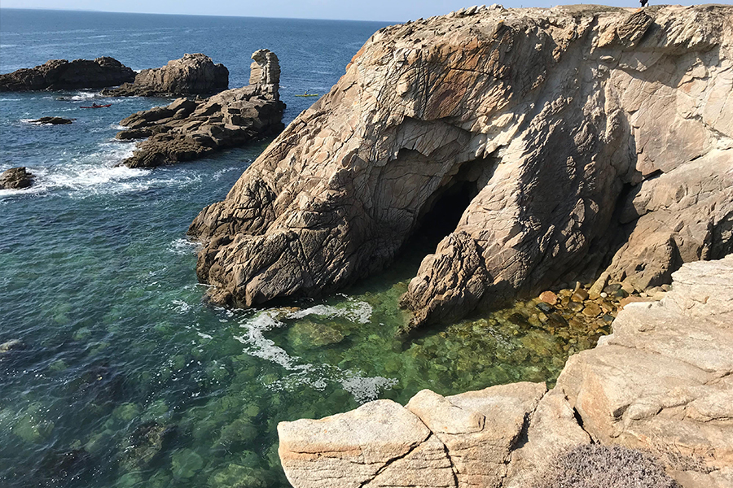

PENSEURS OU PAUMÉS?
-Le sens de la vie est simplement d'être vivant. C'est si clair et si évident et si simple. Et pourtant, tout le monde se précipite dans une grande panique comme s'il fallait réaliser quelque chose au-delà d'eux-mêmes
-Aucun plan valable pour l'avenir ne peut être fait par ceux qui n'ont pas la capacité de vivre dans le présent. Le passé et le futur sont des vraies illusions, qu'ils existent dans le présent, qui est de ce qu'il y a et de tout ce qu'il y a.
-Être libre de la convention, ce n'est pas de la mépriser, mais de ne pas être trompé par elle.
-Alan WattsLes Oasis des paumés
- Forrêt de Mervent
- Saint-Laurent sur Sèvre
- La Bretagne
 Coulvée de Chem (mdr)
Coulvée de Chem (mdr)- UCO Angers
Projets des paumés

La permaculture
Apprendre à cultiver et étudier en profondeur notre écosystème afin de vivre en autonomie.
Voyages à l'étranger
Partir dans un pays étranger afin de mieux connaître le monde.
Jeux vidéos
Créer son propre univers virtuel pour le fun :P
Découvrir la France
Partir en randonnée et faire le wwoofing afin de mieux comprendre son propre pays.